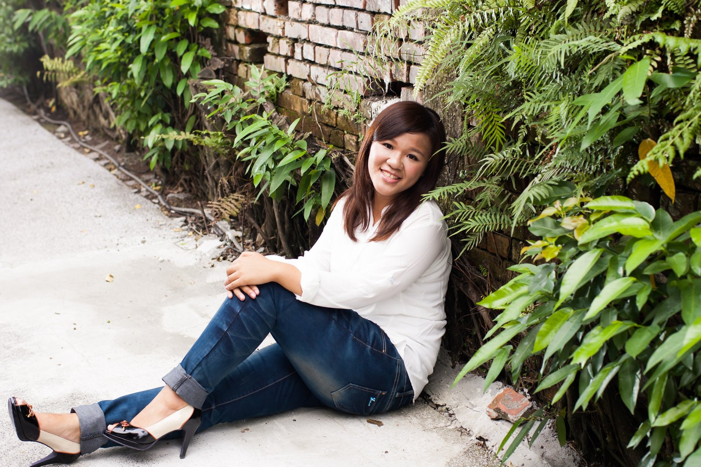

Based in Taiwan · Building with Claude
MINIJIN LAB
從自己的生活裡，長出 AI 隊友。
Grow your own AI teammates — from your daily life.
AI 個人化工作系統 · CRM 設計顧問 · 工具與教學
Personal AI work systems · CRM consulting · tools & teaching
一套真的在跑的系統A system that actually runs
創辦人本人的 15 人 AI 團隊，在 Claude 上運作——投資追蹤、工作流程、內容產線、創作工作室。不是 demo，是每天的日常。系統本身，就是產品原型。
Our founder runs a 15-agent personal AI team built on Claude — investment tracking, work workflows, content pipelines, and a creative studio. Not a demo: it runs every day. The system itself is the product prototype.
服務Services
-
AI 個人化工作系統Personal AI Work Systems
教非工程背景的人，從自己的生活裡蓋出自己的 AI 工作系統。課程 2027 年開課，籌備中。
Teaching non-engineers to build personal AI work systems from their own lives. Course launching 2027.
-
CRM 設計顧問CRM Design Consulting
十年日商電商營運經驗——客服體系與會員經營從零建立、跨境電商流程設計與導入。
Ten years of operations at a Japanese e-commerce company — customer service and membership systems built from zero, cross-border workflow design and rollout.
-
社群工具生態Tools for Creators
為台灣 AI 角色扮演社群打造的免費工具與中文知識庫——製卡 Kit、預設檢視器、教學文件。
Free tools and a Chinese-language knowledge base for Taiwan's AI roleplay community — character-card toolkit, preset viewer, tutorials.
關於About

Minijin（張喬雅）——創辦人。十年日商電商營運，一手建立公司的客服與 CRM 體系；2026 年把自己的工作全面改造成 AI 協作系統，現在教別人做同一件事。
Minijin (Chiao-Ya Chang) — Founder. Ten years running operations at a Japanese e-commerce company, where she built the customer service and CRM systems from scratch. In 2026 she rebuilt her entire workflow into an AI-collaborative system — and now teaches others to do the same.